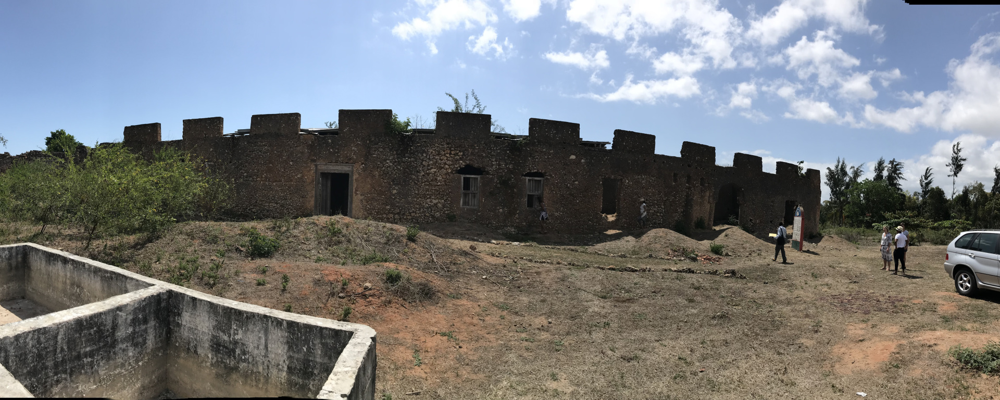

"The Christ Church (or Church of Christ) is an Anglican cathedral in Stone Town, Zanzibar, Tanzania. It belongs to the Anglican Church of Tanzania. It is a landmark historical church,[1] as well as one of the most prominent examples of early Christian architecture in East Africa. It was built in seven years, the foundation stone being laid on Christmas Day 1873 until the opening on Christmas 1879, based on a vision of Edward Steere, third Anglican bishop of Zanzibar, who actively contributed to the design. As most buildings in Stone Town, it is made mostly of coral stone. It has a unique concrete roof shaped in an unusual barrel vault (that was Steere's idea) and the overall structure mixes Perpendicular Gothic and Islamic details.[4] The cathedral was consecrated in 1903 and named after the Canterbury Cathedral.
Malindi Mosque is a mosque in Stone Town, Zanzibar, located near the port.[1] It is one of the oldest mosques in Zanzibar, dated to the 15th century.[2] It was built by Sunni Muslims and it has some unusual architectural features, including a cone-shaped minaret (one of just three minarets of this shape in East Africa) and a square platform.
“Bi” (Swahili for ‘Lady’) Khole was one of Sultan Said’s daughters and with her wealth had an estate built as an out of town getaway. Local rumour has it that Khole planted one tree for each of her lovers. The Palace overlooked the ocean and is surrounded by fields of Mango trees.”
Chwaka Bay is an intertidal water body on the east coast of Unguja Island, Zanzibar, Tanzania. The area contains all three critical marine habitats namely mangroves, seagrasses and coral reefs; its mangrove being the largest single mangrove forest in Unguja Island. The ecological importance of Chwaka Bay cannot be overestimated.
This is a palace that was built for Mwinyi Mkuu (the Great Chief) Ahmed Bin Mohammed Hassan. He was the Swahili Ruler of Zanzibar in the 18th Century, before the Oman occupation. The main walls of the palace are still standing. The original royal splendor, pillars, stair cases, old passages and archways are all visible today.
CLOSED for renovation. A landmark building in Stone Town, Zanzibar. It is the largest and tallest building of Stone Town and occupies a prominent place facing the Forodhani Gardens on the old town's seafront, in Mizingani Road. It is located between the Old Fort and the Palace Museum (and former Sultan's Palace). It is one of six palaces built by Barghash bin Said, second Sultan of Zanzibar, and it is said to be located on the site of the 17th-century palace of Zanzibari queen Fatuma. The House of Wonders currently houses the Museum of History and Culture of Zanzibar and the Swahili Coast.
Prison (Changuu) Island a small island 5.6 km north-west of Stone Town, Unguja, Zanzibar. The island saw use as a prison for rebellious slaves in 1860s and also functioned as a coral mine. The British First Minister of Zanzibar, Lloyd Mathews, purchased the island in 1893 and constructed a prison complex there. No prisoners were ever housed on the island and instead it became a quarantine station for yellow fever cases. More recently, the island has become a government-owned tourist resort and houses a collection of endangered Aldabra giant tortoises which were originally a gift from the British governor of the Seychelles.